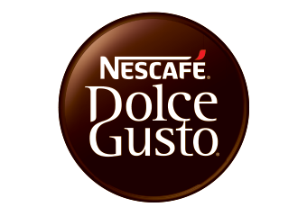
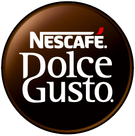

네스카페 Nescafe
네스카페(Nescafé)는 네슬레가 생산·판매하는 인스턴트 커피 브랜드이다.
최종 업데이트
네스카페는 어떤 브랜드인가
네스카페는 스위스 식품기업 네슬레가 1938년 4월 출시한 인스턴트커피 브랜드다. 스위스 화학자 막스 모르겐탈러가 분무건조 방식으로 개발했으며, 브라질에 쌓인 잉여 커피 원두를 처리하려는 연구에서 출발했다.
출시 첫해 1년치 재고가 두 달 만에 동날 만큼 즉시 반향을 일으켰고, 이후 180개국 이상으로 판매망을 넓혔다. 인스턴트커피 부문에서 판매량 세계 최대 규모를 기록하며 네슬레의 핵심 매출원으로 자리한다.
네스카페는 어떻게 봐야 할까
네스카페의 핵심은 인스턴트커피라는 카테고리 자체를 만든 원조라는 점으로, 이 분야에서 흔히 인스턴트커피의 대명사로 불린다. 동서식품과 합작했던 맥스웰하우스, 후발 프리미엄 스틱커피 카누와 비교하면 네스카페는 글로벌 단일 브랜드 체계와 돌체구스토 캡슐 라인으로 차별화한다.
다만 한국 시장에서는 동서식품 맥심에 크게 밀린다. 조제커피 브랜드 점유율은 맥심 약 80.7%, 카누 약 6.85%인 반면 네스카페는 약 3.1%에 그친다.
대신 네슬레는 국내 캡슐커피 시장에서 네스프레소·돌체구스토를 앞세워 약 80% 점유로 우위를 쥐고 있어, 믹스커피는 약세이나 캡슐로 활로를 찾는 구도다.
네스카페는 어떻게 시작되고 성장했나
네스카페의 출발은 1930년대 초 브라질의 커피 과잉 문제였다. 잉여 원두를 오래 보관할 방법을 찾던 측의 협력 요청에 네슬레는 1932년 막스 모르겐탈러를 책임자로 연구에 착수했다.
성과가 더디자 1935년 회사가 자금을 끊었지만 모르겐탈러는 직접 원두를 사들여 연구를 이어갔고, 1937년 4월 마침내 분무건조 기술로 향과 풍미를 보존하는 분말 커피를 완성했다. 1938년 4월 1일 스위스 오르브 공장에서 정식 생산을 시작했다.
제2차 세계대전 중 미군 보급품에 포함되며 세계 각지로 퍼져 글로벌 브랜드가 됐고, 2006년에는 가정용 캡슐 시스템 돌체구스토를 영국·독일·스위스에서 선보이며 제품군을 넓혔다.
네스카페의 브랜드 아이덴티티는 무엇인가
네스카페는 매일의 일상을 함께하는 대중적 커피라는 가치를 내세운다. 2014년 진행한 리브랜딩 캠페인 레드볼루션(REDvolution)에서 빨간 악센트와 빨간 머그를 상징으로 통일했다.
로고는 둥근 산세리프로 바꾸고 E 두 글자를 머그 손잡이 형상으로 다듬었으며, 영문 슬로건도 새로 정비했다. 75년 역사상 처음으로 전 세계 180개국에 동일한 브랜드 정체성을 적용한 점이 특징이다.
타깃은 폭넓은 일반 소비자이며, 따뜻하고 친근한 보이스를 지향한다.
네스카페의 대표 제품과 서비스는 무엇인가
제품군은 크게 인스턴트커피와 캡슐로 나뉜다. 인스턴트는 프리미엄 라인 골드와 보급형 오리지널·클래식 분말 및 스틱 형태가 중심이고, 캡슐 라인 돌체구스토는 전용 머신으로 카페식 음료를 구현한다.
가격대는 대형마트 기준 믹스·리필 제품이 저가, 캡슐과 머신이 중고가에 형성된다. 유통은 대형마트, 편의점, 온라인몰 등 대중 채널 전반에 걸쳐 있다.
네스카페는 누가 만들고 이끌었나
소유자: 네슬레
네스카페는 지금 어떤 상태인가
모회사는 스위스 네슬레다. 네슬레의 2024년 그룹 매출은 약 914억 스위스프랑으로 전년 대비 소폭 줄었으나, 커피가 최대 성장 기여 부문으로 꼽혔다.
커피 제품군은 그룹 전체 매출의 약 27%를 차지하며 네스카페는 그 핵심 축이다. 다만 네스카페 단일 브랜드의 매출액은 별도로 공개되지 않아 정확한 규모는 미공개다.
네스카페 연혁 — 주요 사건은 언제였나
네스카페 로고는 어떻게 변해왔나

BI/CI 아카이브 2보관 이미지 2
BI/CI 아카이브 3보관 이미지 3자주 묻는 질문
네스카페는 언제 설립되었나요?
네스카페는 1938년 설립되었습니다.
네스카페는 어떤 산업의 브랜드인가요?
네스카페는 식음료 분야의 브랜드입니다.
네스카페의 브랜드 아이덴티티는 무엇인가요?
네스카페는 매일의 일상을 함께하는 대중적 커피라는 가치를 내세운다.
네스카페의 대표 제품은 무엇인가요?
제품군은 크게 인스턴트커피와 캡슐로 나뉜다.
네스카페는 현재 어떤 상태인가요?
모회사는 스위스 네슬레다.
네스카페의 공식 웹사이트는 어디인가요?
네스카페의 공식 웹사이트는 https://www.nescafe.com/ 입니다.
출처와 검증
네스카페 관련 참고: 공식 웹사이트 · 위키데이터 Q503191 · 한국어 위키백과 · 영어 위키백과. 브랜드명은 한글과 원어를 함께 표기하되 데이터에 없는 표기는 만들지 않습니다. 기원 국가·설립연도는 검수된 정의문에서 확인된 값을 우선하고, 없을 때만 공식 웹사이트 URL이 일치하는 위키데이터 개체의 값을 씁니다. 위키데이터 값은 2026-09-07 기준입니다.